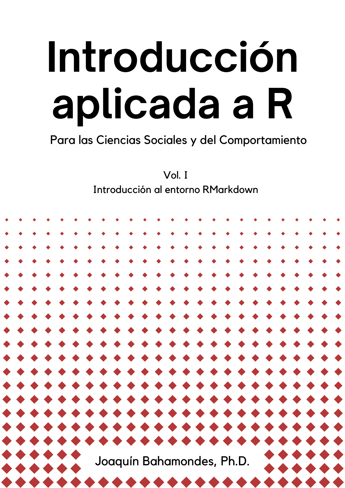

Sobre este libro

El presente documento tiene como objetivo introducir el uso de R, bajo criterios de ciencia abierta, para el ordenamiento y ejecución de código aplicado principalmente a las ciencias sociales y del comportamiento. Por lo tanto, este documento no es un libro de estadística, sino una guía técnica, específica para el uso de R en RStudio y la implementación de su código.
Este volumen, en particular, presenta algunos de los fundamentos del uso de R, sugerencias para el ordenamiento del código, uso de notación básica y funciones esenciales.
Cualquier duda, comentario o sugerencia, por favor dirigirla a Joaquín Bahamondes, autor de esta guía, al e-mail jbahamondes@ucn.cl
¿Por qué R?
El programa R es una consola de análisis de operadores lógicos, principalmente diseñado para análisis estadísticos, con su propio lenguaje de programación. Quizás más importante, es un software de código abierto, gratuito, de gran flexibilidad y capacidad para gestionar distintos tipos de información y producir múltiples resultados, desde output de análisis estadístico, hasta imágenes, archivos de texto y sitios web (entre otros).